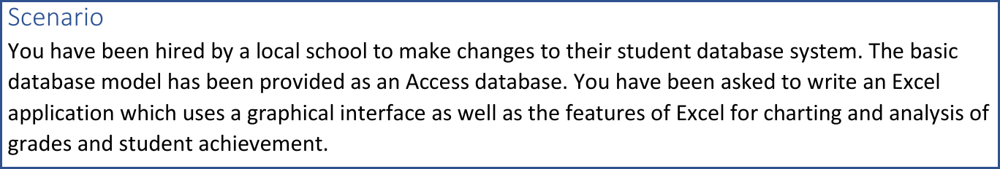
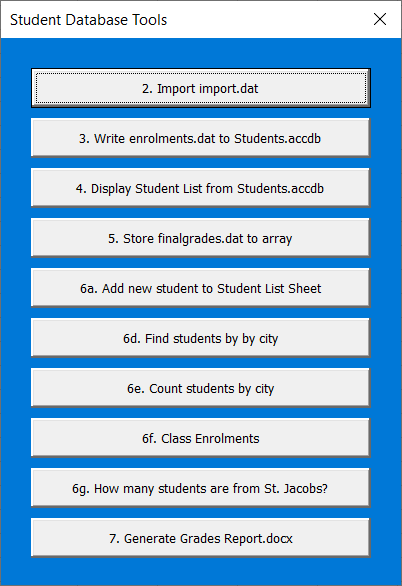
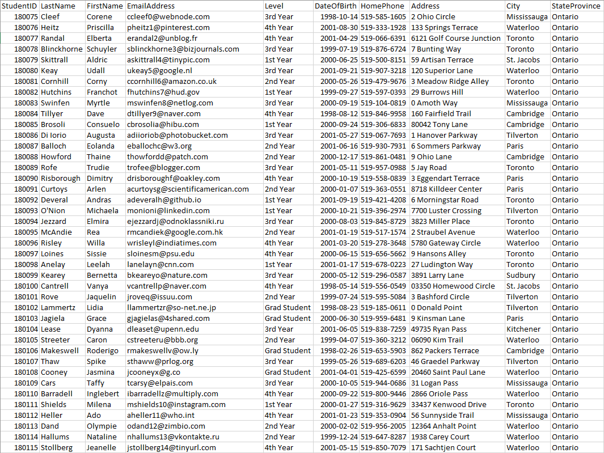
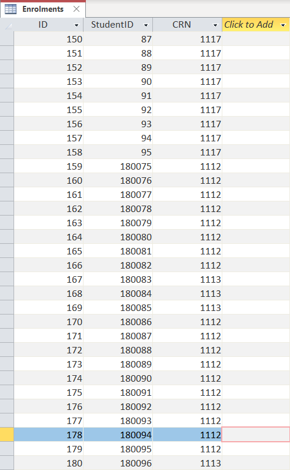
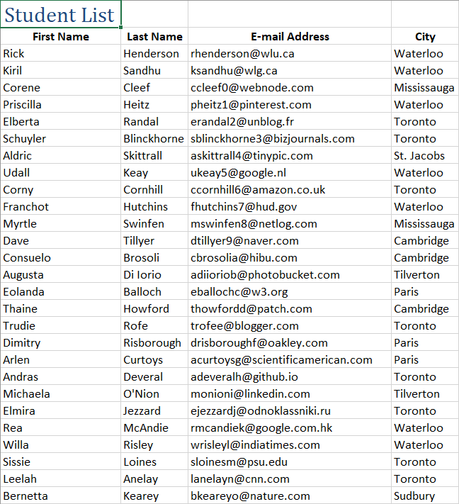
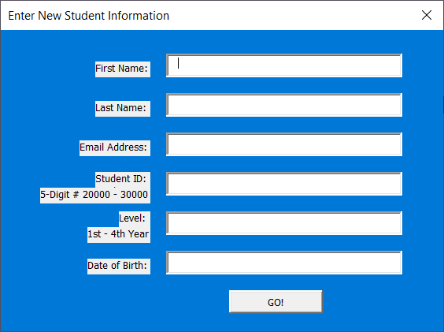

Database Application in VBA and SQL
- For this project, the GUI and corresponding code was written in VBA. Student information was retrieved by reading provided .dat (a type of text) files and querying the provided Access database.
- The GUI for the database system is a UserForm with several commands. For each, all output is being produced from VBA subroutines. Users are required only to enter a few lines information for some of the buttons (each button was required as part of the project).
- (2. Import import.dat) User selects a list of students (import.dat) from the folder containing the Excel file. Results are output to a new worksheet in the workbook.
- (3. Write enrolments.dat to Students.accdb) User selects student enrolments (enrolments.dat) from the project folder. The enrolments are written to the Enrolments table of the database using SQL.
- (4. Display Student List from Students.accdb) This button uses and SQL query to retrieve student information from the Students table of the database. The results are output to a new worksheet.
- (5. Store finalgrades.dat to array) This button simply creates an array of strings from a given text file, in this case finalgrades.dat.
- (6a. Add new student to Student List Sheet) User is prompted to enter information about a new student into a separate UserForm. The student will be added to the Student List from button 4. If the list does not already exist, it will be created and the student will still be added.
- (6d. Find Students by City) User is prompted to enter a city into a message box. The first and last names of every student in the database from the given city will be written to a new worksheet.
- (6e. Count Students by City) If the only the number of students from a given city is required, this button will present a message box that has counted that value.
- (6f. Class Enrolments) User is prompted to enter a course ID and term. Course information and number of students enrolled will be output to a new worksheet.
- (6g. How many students are from St. Jacobs?) Similar to 6e, this button reveals the number of enrolled students from the city of St. Jacobs
- (7. Generate Grades Report) User is prompted to enter a course ID and term. Course information will be output to a new worksheet, as well as student grades, if any exist. Light analysis of the grade data is calculated: class mean, median, mode, and standard deviation, as well as a bar chart representing the grade data.






Full code can be found in github repository here